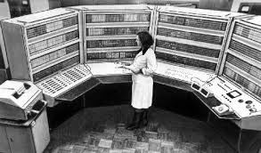
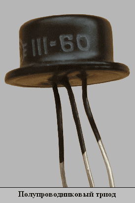

|
Меню
|
Электронно-вычислительная машина 2-го поколения Второе поколение ЭВМ создавалось в период с 1955 по 1964 года. На самом деле, четко ограничивать рамки поколений сложно, так как в одно и то же время выпускались ЭВМ, относящиеся к разным поколениям, да и сам переход от поколения к поколению был не резким, а постепенным. Вначале заменялись одни элементы ЭВМ, затем – другие, и так, постепенно, за несколько лет, осуществлялся переход. Переход на новую элементную базу оказался неизбежным, так как рост производительности и надежность ЭВМ первого поколения достигли своего максимума. Основные причины, приведшие к необходимости замены электронных ламп, были следующими: 1. Нить накаливания в электронных лампах со временем теряет свои эмиссионные свойства и перегорает. В среднем, срок службы лампы не превышал 10 000 часов. Таким образом, в ЭВМ, состоящей из 104 электронных ламп, в среднем, каждый час, выходила из строя одна электронная лампа. Столь низкие показатели надежности были головной болью разработчиков, заставляли применять сложные и дорогостоящие способы повышения надежности, и сильно сдерживали рост производительности ЭВМ. Для сравнения, транзисторы в то время имели срок службы, превосходящий срок службы электронных ламп в тысячи раз. 2. ЭВМ на электронных лампах требуют мощных источников питания, при этом почти 75% энергии растрачивается на тепловых потерях. Это, в свою очередь, приводит к необходимости организации дорогостоящих и сложных систем охлаждения. Транзисторы потребляют на порядок меньше энергии и слабее греются. 3. Большие габариты электронных ламп. Самые миниатюрные радиолампы не позволяли в одном кубическом дециметре разместить более 1000 элементов, в то же время использование транзисторов позволяло на порядок увеличить плотность монтажа. 4. Радиолампы – это хрупкий элемент. Его установка требует осторожности и аккуратности, и с большим трудом поддается автоматизации. В то же время транзисторы - гораздо более надежны и прочны, что позволяет легко автоматизировать процесс их производства и монтажа, а это приводит к снижению себестоимости транзисторов и ЭВМ в целом. Таким образом, основой ЭВМ второго поколения стало использование новой элементной базы - полупроводниковых транзисторов (триодов), составляющих основную часть конструкции ЭВМ. Полупроводники — это вещества, удельное сопротивление которых изменяется в зависимости от температуры, наличия примесей или изменением освещенности. При построении транзисторов использовали полупроводники с различными примесными проводимостями. Первый действующий транзистор был биполярным, и создали его в 1947 году ведущие специалисты Уильям Шокли, Джон Бардин и Уолтер Браттейн из фирмы «Bell Labs». Официальная демонстрация устройства состоялась 23 декабря 1947 года, и именно эта дата считается официальным днем изобретения транзистора. Первый биполярный транзистор представлял собой прибор, в котором два металлических контакта соединялись с бруском из поликристаллического германия. Его копия изображена на фотографии справа. Таким образом, основой ЭВМ второго поколения стали биполярные транзисторы, представляющие собой три последовательно расположенные слоя полупроводников: эмиттера, базы и коллектора. 
|
||

|
Электронно-вычислительная машина |
|---|